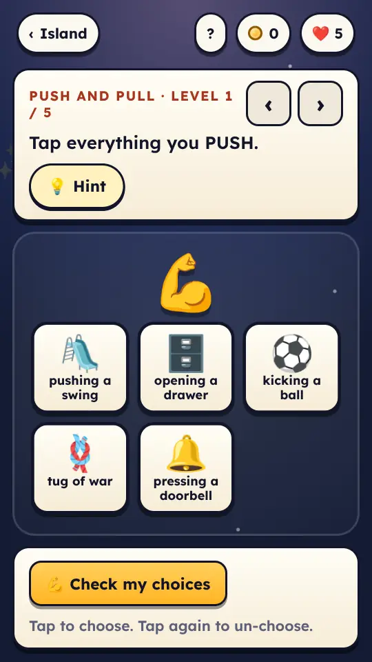

All labs › Physics › Push and Pull
Physics lab · Raju's Workshop Yard
Push and Pull
धक्का और खिंचाव · धक्का, खिंचाव और गुरुत्व
Sort everyday actions into pushes and pulls, and see how forces start, stop and change the shape of things.
- Physics
- Tinkerer · ages 7–10
- 5 levels
- English · हिंदी
- Free, no sign-up

How it works
Push or pull?
- Read what to find.
- Tap every action that fits.
- A force is a push or a pull. It can move things, stop them or change their shape.
Stuck? Every level has a hint, and a "Show me" walk-through.
Why it works
The big idea
A force is a push or a pull, like the nudge you give a swing. Gravity is an invisible pull that keeps bringing everything back down to the ground.
What children learn
Skills in this lab
- Forces are pushes and pulls
- Forces can start, stop, turn or squash things
- Gravity pulls things down
For parents and teachers
This lab is in the Tinkerer band (ages 7–10). Each player picks a band, and sees only the labs made for it.
Curio Island is free in the browser with no sign-up. Progress is saved on this device only. Ads are child-safe and non-personalised, and never appear inside a lab.
Part of Raju's Workshop Yard on the island. 5 levels to finish.